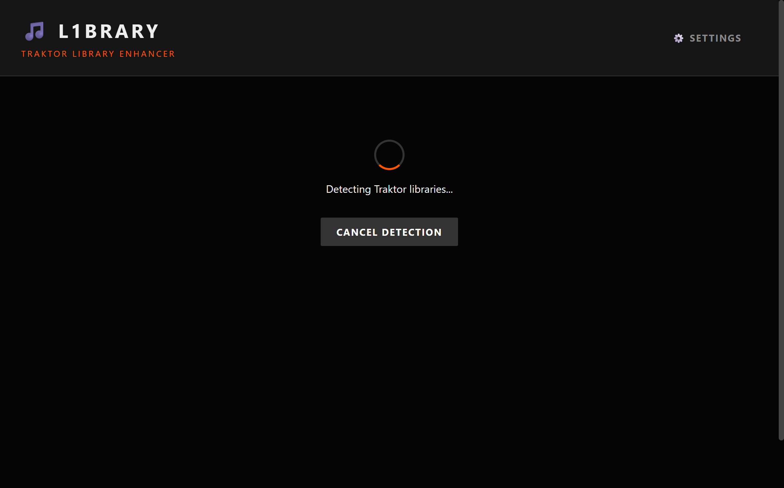

Unlock the Full Potential
of your Traktor Collection.
L1brary automatically enriches your Traktor Pro music collection with high-fidelity metadata from MusicBrainz, Discogs, and Spotify.

Powerful Metadata Enrichment
Everything you need to organize your DJ library with zero manual effort.
API Waterfall
Intelligent fallback system checks MusicBrainz, then Discogs, then Spotify to find the highest quality metadata for your tracks.
100% Safe Operations
Creates timestamped backups of your collection before making any changes. Includes a Dry Run mode to preview edits first.
Smart Auto-Detection
Automatically detects your Traktor Pro libraries on Windows and macOS, providing instant statistics on missing labels, genres, and release dates.